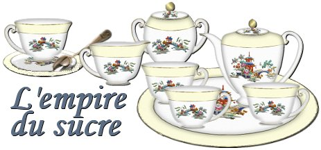
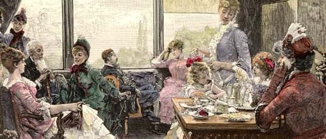
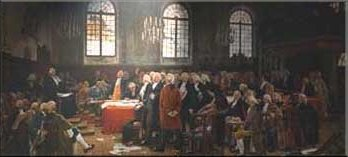
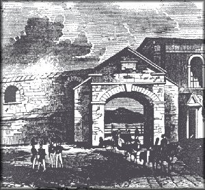

|
La
cinquième génération
Alors âgé de dix ans, Jean-Baptiste est le témoin de ce moment pivot de notre histoire. Son père Joseph a quarante ans, son grand-père est décédé quelques années avant sa naissance. La famille vit au Sault-au-Récollet. Jean-Baptiste a une vie riche d'évènements historiques, et une nombreuse descendance. Par sa conjointe, nous sommes apparentés à une femme tout à fait au premier plan de l'histoire de la colonie, Marguerite Bourgeois. Eh oui, une des pionnières de Montréal, la sainte, mais aussi, notre grand-tante.... L'étude de notre ascendance agnatique, celle des ancêtres portant le même nom que nous, est intéressante. Mais, quand on cherche aussi les collatéraux, c'est-à-dire les conjointes et leurs lignées, cela devient un sac à surprises. À la génération précédente nous avions découvert notre parenté avec Hélène Desportes, à celle-ci, nous rencontrons Marguerite Bourgeois, et ce n'est pas fini .... Jean-Baptiste passe les premières années de sa vie en Nouvelle-France, mais en 1759 tout bascule... pour en savoir plus >>> Les Canadiens ont vécu de 1759 à 1764 une période de cinq ans fort importante par le caractère inattendu des mesures que les Anglais appliquent à la colonie française... pour en savoir plus >>>
Le 10 août 1764, sur la Place d'Armes de Québec, devant les troupes en armes et une nombreuse population, la Proclamation Royale est lue. C'est la première constitution anglaise dont est dotée la colonie qui s'appelle maintenant "Province of Quebec". Débute alors le régime anglais... pour en savoir plus >>>
 Le Canada devient britannique parce que les Anglais aiment leur thé sucré... Lors de la Guerre de Sept Ans (1756-1763), l'Angleterre a conquis par les armes le Canada, mais aussi la Guadeloupe, la Martinique, et les possessions françaises aux Indes. Lors des négociations menant au Traité de Paris, l'Angleterre ne pouvant tout garder, les discussions portent sur "quel pays garde quelle colonie?" Le Canada aurait tout aussi pu alors revenir à la France, malgré la victoire militaire de l'Angleterre. Or, un puissant lobby veille au grain et fait tout pour que l'Angleterre choisisse le Canada et laisse les deux îles antillaises à la France. C'est le lobby du sucre. À cette époque le sucre est aussi important économiquement que l'est le pétrole aujourd'hui. De riches planteurs anglais, installés en Jamaïque depuis trois générations, les hommes les plus riches de l'époque, ne veulent pas perdre leur monopole commercial de la vente du sucre dans tout l'empire britannique. Certains planteurs sont députés au Parlement britannique et peuvent donc voter selon leur gré, d'autres usent de tous les moyens (pots de vin, chantage, corruption...) pour influencer le vote des parlementaires en leur faveur. Ils constituent un puissant lobby qui met toute son énergie, son pouvoir et son argent pour que le Parlement choisisse le Canada, un pays froid et sans grande valeur autre que les fourrures, mais qui ne fera pas de compétition à leur commerce. Ils ont gain de cause. La France, aussi, est satisfaite du Traité puisqu'elle conserve le sucre des Antilles et les pêcheries de Saint-Pierre et Miquelon. Les soixante-dix mille canadiens de la vallée du Saint-Laurent ne comptent guère pour le ministre Choiseul et coûtent cher. Il a aussi compris que le retrait de la France libérerait la Nouvelle-Angleterre de cette Nouvelle-France qui les encercle et harcèle sans relâche leurs postes frontaliers, avec leurs alliés indiens. Il est satisfait de tendre ainsi une potentielle embûche à l'Angleterre. Le ministre anglais William Pitt est conscient du risque, mais il le préfère à la suprématie française. Il ne faudra que vingt ans pour donner aux Américains des idées d'indépendance... Nous sommes des britanniques depuis 250 ans, nos mœurs et nos manières sont britanniques... avec une prédominance américaine et une teinte franco-latino qui fait notre particularité. Le lion a pris la colonie du royaume des lys, mais les Canadiens ont survécu, avec leur langue et leur religion, en s'adaptant et en intégrant les nouvelles valeurs et les mœurs du conquérant, souvent pour leur plus grand avantage. De gré ou de force, malgré les luttes, les rivalités, la méfiance, le mépris, les "deux solitudes", les Canadiens de 1759, et leurs descendants, sont devenus vraiment des sujets britanniques.  Les Britanniques étant les maîtres et l'élite économique et culturelle, les Canadiens qui voulaient évoluer dans la bonne société ont emprunté évidemment leur modèle de vie. Ils sont d'abord allés dans leurs écoles, leurs universités, leurs musées, leurs bibliothèques, leurs théâtres, leurs lieux de villégiature. Les Canadiens ont adopté l'étiquette culinaire des Britanniques, leurs meubles victoriens, leurs sports... Durant la belle saison, ils reçoivent leurs invités dans des jardins fleuris, en leur offrant le thé. Pas une maison aujourd'hui qui n'ait encore de la vaisselle anglaise héritée des parents, peu importe sa qualité. Même nos rites funéraires et nos cimetières sont anglais. Au 20ème siècle, les Canadiens-français développent leurs propres institutions, associations, clubs sportifs, ou ils prennent la relève des institutions anglaises. Un exemple, The Montreal Museum of Fine Arts, construit en 1912 par l’Art Association of Montreal, fondée en 1860 par Francis Fulford, devient le Musée des Beaux de Montréal au milieu du siècle.  Dès le début de l'implantation du système parlementaire monarchique le Canadien s'y est senti à l'aise et y évolue depuis comme un poisson dans l'eau. Dans un tel système décentralisé le Québec peut marquer sa différence et faire preuve d'une certaine autonomie. Ceci contrairement à un système républicain, comme aux États-Unis ou en France, où le nationalisme doit être plus uniforme, la République agissant comme un rouleau compresseur qui nivelle tout et ne reconnaît pas les différences.Les Britanniques ont construit nos grandes villes à
leur manière, avec des ruelles pour assurer les services par l'arrière
de la maison, de grands parcs, des jardins. Nos maisons de ville,
avec un couloir qui mène de la porte avant à la porte arrière, les appartements
étant de chaque côté du couloir et la cuisine au fond, sont sur le
modèle anglais. Nos bungalows de banlieue, havre de paix de la
famille d'après-guerre, sont anglais.  Ce sont eux qui, au 19ème siècle, conservent les murs de Québec, les rénovent à même des fonds privés et les complètent, contrairement au mouvement populaire qui demande leur démolition, les trouvant encombrants et désuets. C'est donc à son époque de ville anglaise que Québec doit sa beauté, dont elle est si fière aujourd'hui, et qui lui donne sa notoriété en tant que seule ville fortifiée d'Amérique. Un Québécois qui se rend à Londres aujourd'hui s'y trouve chez-soi beaucoup plus qu'à Paris. Il se reconnaît dans l'urbanisme de la ville, les déjeuners (œufs, bacon), les gens. Comme les Britanniques, nos rapports en couple sont égalitaires. Nous sommes patients et disciplinés, ainsi nous acceptons de faire la queue à l'arrêt du bus ou au théâtre. Nous aimons notre confort et notre tranquillité. Nous sommes de bons perdants, par exemple nous pouvons appuyer une équipe sportive que nous aimons même si nous savons qu'elle ne gagnera pas. Nous aimons la nature "à l'anglaise", c'est-à-dire naturelle et non hyper-structurée comme celle "à la française". Les Québécois ont acquis la capacité d'absorber d'autres influences culturelles, les renommer en français et les servir "à leur sauce". Notre musique folklorique est en fait d'inspiration irlandaise et écossaise. Le même phénomène se voit dans la musique moderne. Les chansons des Beatles ont été traduites en français par des Québécois, et sont devenus des hits au Québec, bien des mois avant que la Beatlemania ne déferle en Amérique. Le rock progressif a été adapté à la québécoise par des gens comme Pierre Flynn et les autres. Notre teinte britannique est plus prononcée que nous ne voulons le reconnaître ou l'admettre, en fait nous n'y réfléchissons jamais, tant notre manière de vivre va de soi. La conquête est probablement ce qui pouvait arriver de mieux, considérant la désastreuse situation dans laquelle se trouvait la Nouvelle-France et ses habitants. En tout cas, les Canadiens de l'époque en ont tiré plusieurs avantages, malgré tout, et leurs descendants par la force des choses. On peut dire que la conquête a servi de tremplin à une colonie au bord du désastre.
|
 Jean-Baptiste est notre
ancêtre de la cinquième génération à vivre en Nouvelle-France, mais
c'est aussi le dernier.
Jean-Baptiste est notre
ancêtre de la cinquième génération à vivre en Nouvelle-France, mais
c'est aussi le dernier. 
|
|
|